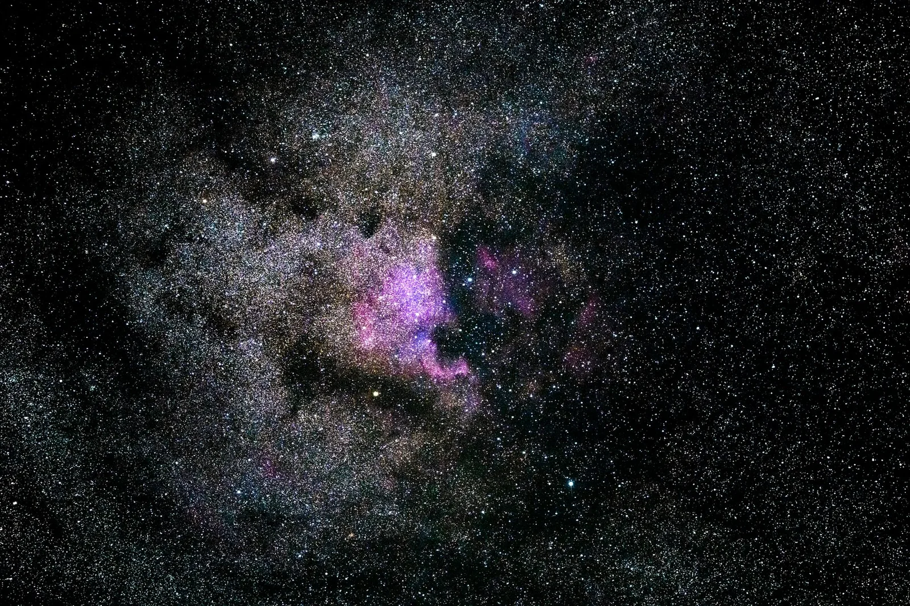
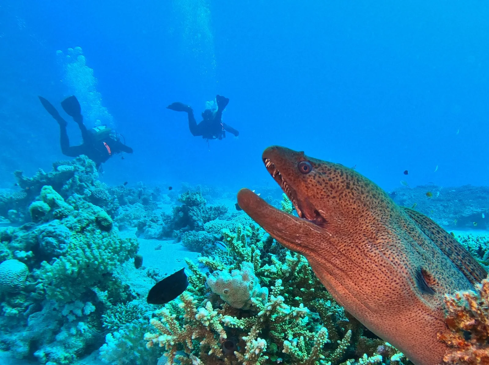
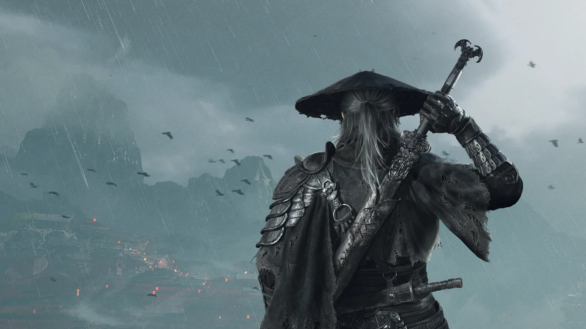

TOP 10: Los mejores juegos de mundo abierto para PC: 10 mundos que explorar
Cada puesto incluye una imagen. El pie de foto indica si es una fotografía temática o material oficial del título.
- 01
Elden Ring
La curiosidad guía una aventura de fantasía con jefes que se pueden dejar para más tarde. Ideal para quien quiere explorar con poca señalización.

Foto temática de un castillo medieval rodeado de bosque. No es material oficial del título. Foto: swuf . / Pexels - 02
Baldur’s Gate 3
Un mundo reactivo donde conversaciones, decisiones y las habilidades del grupo abren caminos diferentes.
Foto temática de un castillo medieval rodeado de bosque. No es material oficial del título. Foto: swuf . / Pexels - 03
The Witcher 3: Wild Hunt
Sus contratos y misiones secundarias convierten cada desvío en una historia; funciona para quien prioriza personajes y ambientación.
Foto temática de un castillo medieval rodeado de bosque. No es material oficial del título. Foto: swuf . / Pexels - 04
No Man’s Sky
Explora planetas, construye y fija objetivos propios en una experiencia que se presta a volver por temporadas.

Foto temática de una nebulosa y estrellas. No es material oficial del título. Foto: Felix Mittermeier / Pexels - 05
Subnautica
La exploración submarina depende de ampliar el equipo y atreverse a bajar a zonas más profundas. El descubrimiento sostiene su tensión.

Foto temática de buzos explorando un arrecife de coral. No es material oficial del título. Foto: Alain Margreve / Pexels - 06
Valheim
Supervivencia cooperativa con progresión por biomas, construcción y preparación antes de luchar contra cada jefe.
Foto temática de un castillo medieval rodeado de bosque. No es material oficial del título. Foto: swuf . / Pexels - 07
Red Dead Redemption 2
Una frontera detallada y una historia de banda invitan a recorrer el mundo sin correr de misión en misión.
Foto temática de un jinete a caballo en un paisaje desértico. No es material oficial del título. Foto: Anya Juarez Tenorio / Pexels - 08
Forza Horizon 5
Un mapa amplio convierte la conducción en una forma de explorar y encontrar eventos a tu ritmo.

Foto temática de un coche deportivo azul en una calle de noche. No es material oficial del título. Foto: Michał Robak / Pexels - 09
Cyberpunk 2077
Night City combina misiones narrativas con una ciudad densa; distintas configuraciones alteran el combate y la forma de afrontar encuentros.

Foto temática de una calle urbana iluminada de noche. No es material oficial del título. Foto: Bekir Donmez / Pexels - 10
Ghost of Tsushima Director’s Cut
La exploración de la isla y sus señales visuales conectan el mundo abierto con el combate de samuráis. La versión para PC permite ajustar la experiencia al equipo.

Imagen de Ghost of Tsushima Director’s Cut.
Cómo elegimos estos mundos
Nos fijamos en la libertad para decidir el orden, la personalidad del escenario y la interacción entre sistemas. La lista no se basa en una puntuación agregada ni pretende cubrir todos los subgéneros. También importa la facilidad para volver: un mapa bonito puede resultar agotador si cada desvío es una tarea idéntica. Elegimos títulos que proponen objetivos y dejan espacio para una aventura propia.
Fantasía y rol
Elden Ring premia explorar sin una ruta rígida y permite construir un personaje con armas y habilidades variadas. Baldur’s Gate 3 convierte diálogos y decisiones en parte central de un mundo lleno de consecuencias. The Witcher 3: Wild Hunt destaca por encargos donde las historias pequeñas suelen ser tan memorables como la trama principal. Son buenas opciones si quieres invertir tiempo en un universo y tomar decisiones con contexto.
Ciencia ficción y supervivencia
No Man’s Sky permite explorar planetas y sistemas con un fuerte énfasis en descubrimiento y construcción; el alcance se disfruta mejor fijando metas personales. Subnautica concentra la exploración en un océano alienígena donde fabricar equipo también reduce el peligro. Valheim propone supervivencia cooperativa en un mundo generado, con progresión ligada a biomas y jefes. Cada uno favorece una relación diferente entre exploración, recursos y compañía.
Acción, conducción y simulación
Red Dead Redemption 2 construye una frontera detallada alrededor de una historia de banda y cambio. Forza Horizon 5 transforma un paisaje amplio en escenario de eventos de conducción accesibles, aunque su catálogo y conexión online deben consultarse. Cyberpunk 2077 combina una ciudad densa, narrativa y combate con enfoques distintos según el personaje. Comprueba requisitos actuales y soporte de mando antes de elegir, especialmente en equipos portátiles.
Elegir sin perderse en el mapa
Si disfrutas de explorar cada rincón, busca un juego con señales ambientales y recompensas variadas. Si prefieres una historia, prioriza misiones escritas y personajes memorables. Para jugar con amistades, revisa que exista cooperativo real: algunos títulos solo permiten compartir capturas o comparar rankings. Empieza con una meta corta y desactiva marcadores si sientes que el mapa dicta cada movimiento.
Una décima opción: Ghost of Tsushima Director’s Cut
Ghost of Tsushima Director’s Cut amplía una aventura de acción ambientada en una isla bajo invasión y basa buena parte de su navegación en señales del paisaje. En PC, comprueba los requisitos, opciones gráficas y disponibilidad de multijugador de Legends en la ficha actual. Es una recomendación para quien prefiere combate, exploración y una historia guiada a construir sistemas desde cero. Su inclusión completa diez opciones junto a los nueve mundos descritos arriba.
Rendimiento y modificaciones en PC
Los mundos abiertos pueden cargar CPU, memoria y almacenamiento de forma diferente a un juego por niveles. Mira benchmarks de tu GPU y resolución, pero también revisa stutter, tiempos de carga y estabilidad después de parches. Antes de instalar mods, guarda una copia de tus partidas y verifica que el mod sea compatible con la versión actual. Los mods pueden ampliar una experiencia, aunque no son un sustituto del contenido oficial ni siempre funcionan en modos online.
Ponte un objetivo para cada mundo
El tamaño del mapa puede abrumar si intentas completar cada icono. Elige un objetivo corto: descubrir una región, mejorar equipo o seguir una misión secundaria que te interese. Desactiva ayudas si te resulta más divertido orientarte por el entorno. Para juego cooperativo, consulta si la campaña completa admite compañía o solo existen misiones específicas. Este pequeño plan ayuda a que explorar no se convierta en otra lista de tareas.
Planifica un equipo para el mundo que quieres jugar
Elige el juego y el monitor antes de comprar hardware, porque la resolución objetivo determina gran parte del coste. Revisa benchmarks recientes del título exacto y registra resolución, ajuste y versión del controlador. Para un mundo con muchas cargas, la capacidad del SSD y el espacio libre también importan. Si el juego admite mods, confirma si afectan a logros o multijugador. No compres una tarjeta solo por sus cifras máximas de marketing: la prueba debe corresponder a una escena real y al procesador que usarás. Al instalar, prueba una configuración equilibrada y sube las opciones de una en una para identificar el límite de tu equipo.
En resumen
El mapa más grande no siempre es el más interesante. Escoge según el tipo de descubrimiento que te divierte y consulta los requisitos de la edición actual antes de instalar.
Preguntas frecuentes
¿Qué mundo abierto es mejor para empezar?
The Witcher 3 ofrece una aventura narrativa guiada; No Man’s Sky favorece la exploración libre.
¿Todos funcionan en Steam Deck?
La compatibilidad depende de cada título y versión. Consulta la ficha de Steam Deck verificada.
¿Hay opciones cooperativas?
Valheim y algunos modos de No Man’s Sky ofrecen cooperación; revisa la modalidad y límites de cada edición.
¿Cómo se ordenó la lista?
Por variedad de diseño y personalidad del mundo, no por ventas o nota agregada.
Fuentes y lecturas
Consulta la fuente original cuando exista y su fecha; los anuncios, el catálogo y las guías de terceros pueden cambiar.